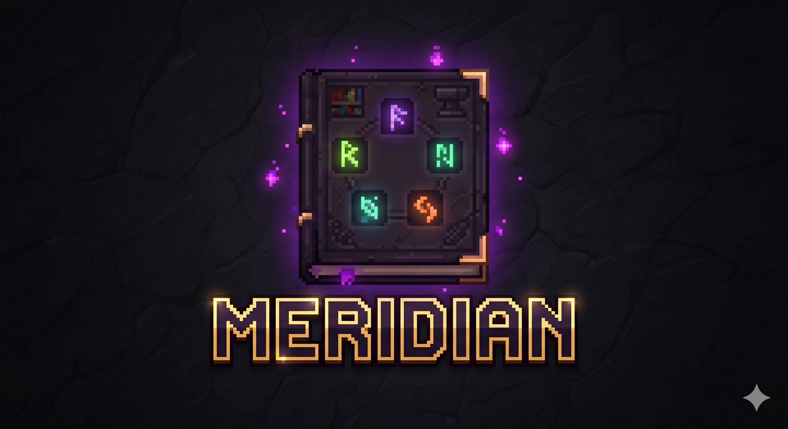

A complete enchanting overhaul for Minecraft
Five independent stats replace vanilla's single power value. 75 original enchantments, 25+ themed shelf blocks, two-tier enchantment libraries, salvage tomes, and anvil upgrades — all fully data-driven.
Download Latest ReleaseCore Systems
Six interlocking systems that transform Minecraft's enchanting from a single-click gamble into a deep progression mechanic.
Five-Stat Enchanting
Eterna, Quanta, Arcana, Rectification, and Clues — each axis controls a different aspect of enchanting power, variance, rarity bias, consistency, and preview visibility.
75 Original Enchantments
Combat, ranged, tool, mobility, shield, elytra, and mount enchantments. All built on vanilla's data-driven EnchantmentEffectComponents with custom Java handlers.
Themed Shelves
25+ shelf blocks spanning Overworld, Nether, Ocean, Deep Dark, and End tiers. Each contributes unique stat combinations. Fully data-driven via datapacks.
Enchantment Libraries
Two-tier pooling storage blocks that consolidate enchanted books into per-enchantment point banks. Basic (level 16 cap) and Ender (level 31 cap) variants.
Salvage Tomes
Three tomes for extracting enchantments: Scrap (random, destroys item), Improved Scrap (all, destroys item), and Extraction (all, preserves item).
Anvil Upgrades
Prismatic Web strips all curses from an item. Iron Blocks repair chipped and damaged anvils. Both configurable and toggleable.
The Five Stats
Each stat is contributed by shelf blocks surrounding the enchanting table. Different shelf types push different stats, letting you tune your setup for the enchantments you want.
Eterna
Maximum enchanting level cap. Replaces vanilla's 0–30 range with 0–50. Higher Eterna unlocks higher-tier enchantments and table crafting recipes. Each vanilla bookshelf provides +1 Eterna (capped at 15).
Quanta
Controls the upper bound of the random power roll. Higher Quanta means more variance — you might get amazing results or terrible ones. Tempered by Rectification.
Arcana
Biases the enchantment pool toward rarer, more obscure enchantments. High Arcana increases the chance of getting rare enchantments and is required for many table crafting recipes.
Rectification
Reduces the negative variance introduced by Quanta. High Rectification with high Quanta means consistently strong results without the downside of random garbage rolls.
Clues
Reveals additional enchantments in the tooltip preview before you commit. Each point of Clues shows one more enchantment from the result, reducing blind gambling.
Enchanting Table Crafting
The enchanting table doubles as a stat-gated crafting station. When your shelf setup meets recipe thresholds, the third enchant slot becomes a crafting result.
Shelf Upgrades
Craft higher-tier shelves directly in the enchanting table. Hellshelves upgrade to Infused, Blazing, and Glowing variants. Seashelves upgrade to Infused, Crystal, and Heart variants. Dormant Deepshelves awaken into full Deepshelves.
Tome Progression
Scrap Tomes upgrade to Improved Scrap Tomes (Eterna 22.5+), which upgrade to Extraction Tomes (Eterna 30+). Each tier requires progressively higher stats.
Material Transmutation
Convert Dragon's Breath into Infused Breath (key material for End-tier shelves). Transmute Honey Bottles into Experience Bottles at three output tiers. Craft Budding Amethyst, Golden Carrots, Golden Apples, Enchanted Golden Apples, Hearts of the Sea, Totems of Undying, and duplicate Echo Shards.
Library Upgrade
Upgrade a Basic Library to an Ender Library at the enchanting table. Requires maximum stats: Eterna 50, Quanta 45–50, Arcana 100. Preserves all stored enchantment data.
Quick Install
- 1 Install Fabric Loader 0.16.10+ for Minecraft 1.21.1
- 2 Install Fabric API (required dependency)
-
3
Drop
meridian-x.x.x.jarinto yourmods/folder -
4
Launch the game. Config generates at
config/meridian.jsonon first run -
5
Adjust settings via the config file or
/meridian reloadin-game
Requires Java 21. Compatible with EMI, REI, JEI, Jade, WTHIT, ModMenu, and Trinkets.